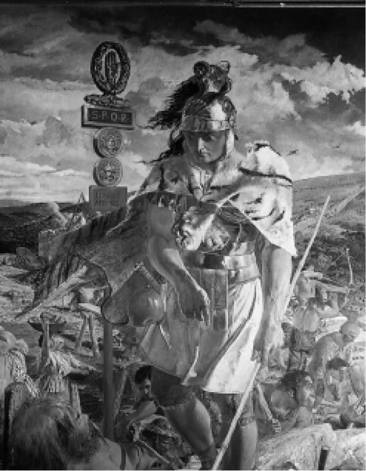

早期罗马城的居民也把自己看作由人和诸神构成的神圣社群，诸神秉持着相当程度的干涉主义态度。由于某种原因，诸神帮罗马居民除去国王，让他们成为公民。罗马人也讲求属于自己的“卓越”，他们称为德性（virtus），如果翻译成现代道德意义上的“美德”就会误导人们：这是一种特定的德行或要素，公民要想去做保存、扩张和荣耀国家所必需的任何事，都要拥有它。无疑，相比于“美德”，它更接近于“勇气”；它无疑来自拉丁语中用来形容男性的vir，相当于我们所说的男子气，而不是具有美德。几乎单从定义上来说，女性就外在于政体，即现在人们眼中的共和国（res-publica），公共所有的东西。当然，在当时“共和的”意味着绝对不会再有国王，但也意味着把各个阶级统合在一起的政制信念。在共和国早期的不同时段都有过阶级之间的战争，但从来没有像在希腊那样，长期被普遍视为民主制与贵族制之争，就好像它们是可能的、绝对的选项；相反，它们关乎议员阶级和平民（populus）之间在共和国中的权力平衡。作为一个军事国家，他们实现了相互依赖；这个国家先是遭到威胁，随后又日益威胁他人，不断地征服和扩张、成为帝国，即一种文化统治其他文化。军事技术与公民身份密切相关。罗马人研制出的高度复杂的战术和调度，不仅要求严格的集体纪律，还要具有高超的个人技术。贵族是与兵士并肩作战的军官，而不是脱离众人、坐在马背上的高等人；普通士兵都是匠人，而不像装备落后的农民那样，仰仗着人多势众。很难说哪一个是因，哪一个是果：对于武装平民，或者是不得已而为之，或者是由于他们值得信任。贵族必须至少在那种程度上保持平民特征。军队和罗马本身的城市暴民，都要被整合到政治共同体之中。与迦太基之间漫长而绝望的战争最终巩固了这一联盟，并且在罗马人与希腊学者开始书写历史时，让罗马人把以下这一点视为自身力量的关键因素：“混合政体”，既不是纯粹的贵族制，也不是纯粹的民主制。波里比阿把罗马政制描述为“元老院动议，平民议决，司法行政官执法”。
然而，这种做法是共和主义爱国热情与苛刻又往往残忍的贵族现实主义的有效混合，一如简洁申明于军团徽章，并铭记于所有军事补给上的文字：“SPQR”（Senatus Populusque Romanus），即元老院和罗马人民；该联盟是他们支配邻国的权力基础。这让他们感到恐惧，认为外部干预无法将贵族与平民区分开（尽管有科利奥兰纳斯的故事），正如希腊内战在很大程度上表明的。西塞罗在他的名言“权力属于人民，权威属于元老院”（potestas in populo,auctoritas in senatu）中，以官方口吻过滤了其中的不当内容，使其成为宪法的一种准则；他说，这样的准则将确保实现温和、和谐的制度。不过，他一定也知道，这是在法律上以漂亮、委婉的方式陈述一种同时也很冷酷的政治谨慎的现实原则。元老院以及独霸元老院的贵族阶级，其权威的来源在于，他们从未忘记，权力归根结底属于罗马城的人民。人民无法集体统治，却可能把政府推倒。遵奉这条基本准则的主要政制手段，是设立护民官（tribune），即由平民选出的司法行政官。在共和国早期，他们的权威来自与人民在一种民主集会，即平民会议（concilium）中的实际会面，但后来集会不再按时举行，最终完全停止了；毫无例外，由人民选出的护民官必须出自元老院的阶级。不过，护民官有否决权。人们认识到，除非带上人民一道，元老院的任何命令从政制上来讲都不合乎体统，在现实中也不可能有效。于是，那些想要当选护民官的贵族，就必须成为煽动家，或者能够扮演煽动者的角色。他们的权力通常仅限于单独的一年任期，但如果没有人愿意冒险质疑，这条规则有时会被放到一边。

图3 19世纪画像，哈德良长城上的一位百夫长。立柱上的字母“SPQR”意为“元老院和罗马人民”
执政官（consul）是任期一年的官员，不过在此期间，他们可以运用元老院的权威，这项权威能转而在公法上限制他人，本身却没有限制：他们行使着以前那些国王拥有的最高权力（imperium），或者说整个国家的集体权力。公民通常受到已知的法律以及合理公正的司法制度的保护，最高权力却可以凌驾于一切之上。塔克文王朝的国王们遭到杀害或罢免后，最高权力或绝对权威并没有终止，而是由元老院和执政官代表整个共同体行使，尽管有可能被护民官否决。外交政策是元老院的事，除了某几次广为人知的例外，不受平民控制。因此很宽泛地说，罗马政制更接近于18世纪英国的议会主权观念，而不是法国的人民主权观念或美国对政府的宪政约束观念。共和主义精神是城市（civitas）市民（cives）的精神。与议会尚未改革前的英国议员一样，元老院议员可能拥有大量地产；但是在元老院，他们身处这个城市及其狂暴的公民中间，有时还是字面意义上的包围。
作为一种共同的文化价值，最高权力不仅在罗马内部携带着权威兼力量（仅仅出于政治上的审慎才有所节制），也能对外部，即向他们战胜的国家或那些冒着危险寻求他们保护的国家绝对地主张权威。最高权力也是罗马人的某种自信或打不掉的傲慢，和他们的司法一样著名。大英帝国巅峰时期的某些英国人和今天的美国领导人也有相同的特征（专横权力会让人变成这样）。经济因素决定着一个社会中权力的基本分配，这种权力事实上如何运用，往往取决于极为独立的价值形式。比如，尊威（Dignitas）是贵族或元老院阶级最为珍视和着力培育的个人价值；但每个平民也都有属于自己的自主（libertas），想要积极地主张和运用。尊威这种品质把大人物从小人物中凸显出来，但小人物的自主是指自由地做法律允许的事，不受随意的干预，也不遭受除法律规定以外的伤害。双方都以同样的毅力坚守着各自的价值。李维把罗马的一位老绅士形容为“像对自己的尊威一样，留意着他人的自主”。共和国早期陶冶的神话和故事，讲述的是堪为典范的简朴风格以及不计个人代价的无私爱国精神。身为罗马的拯救者，辛辛纳图斯将军解散了军团，返回田园。当时的确有这样的人，就像卸任总统的华盛顿，被誉为“美国的辛辛纳图斯”。后来，亚伯拉罕·林肯打趣地说道：“对亚伯拉罕·林肯来说，最有用的就是做‘诚实的阿贝’。” [8] 如果回归田园是表明政治观点的一种方法，那么所表明的也是一种好观点。
罗马人关于权力与同意之间关系的现实主义态度可见于独裁官（dictator）一职，这是罗马共和国的一个宪法职位。一人（早期实践中是两人）在紧急情况发生期间被赋予不受限制的最高权力。如果他在紧急情况结束后恋栈贪权，或为了保留权力而人为地延长紧急状态（“恺撒真的需要入侵英国吗？还是说这只是他维持军事指挥权的另一个借口？”），他事实上就被剥夺了法律的保护。如果能做到，任何人都有权杀死他。诛戮暴君是最为极端又是最大的政治美德。杀死最后一位国王的布鲁图斯，以及他那杀死第一位恺撒的后人，在共和时期的著作中受到同等的尊崇。如果诛戮暴君行为从来不可能成为抑制权力滥用的有效机制，这种观念就表明罗马人追求两种有时互不相容的价值时有多么不顾一切：一种是国家的生存，一种是个人的自由与荣誉。约翰·肯尼迪遭到暗杀的那天晚上，一个朋友哭着打电话给我：“不过伯纳德，纵然发生了这一切，我们绝不能忘记真正的暴君还是该杀的。”
因此，罗马的政体既涉及一套复杂的机制，也涉及一套最为繁复并经过合理化的价值观念，后者在学校、文学和历史上有意识地进行着教导、分析、赞美和延续，当时和此后的世代都是如此。罗马，甚至是共和时期的罗马，由于这个原因（至少有几百年）在朝向帝国转变的过程中得以保持内在的自由，是因为有一种方式来看待这些在古代世界具有革命性的价值。他们相信，“罗马式生活”能够被外国人学习、获得和采纳。这种生活方式不取决于原有公民的民族构成，也不取决于只守护着各自城邦的诸神的祝福和保护。入籍的外国人可以带上他们的神明一起，只要双方都忠于罗马。罗马人实际上公然相信，虽然创建罗马城的是一位英雄，堪比逃离特洛伊的普里阿摩斯国王的儿子埃涅阿斯，他的继任者们笼络追随者的方式却是使这座城市成为丧失公民权的人和流亡者的避难所。阶级结构虽然僵化，对于能力而不是出身或血统的顽强推崇，却被植根于建城神话的核心，为罗马人赋予了身份认同感。
公民权脱离种族，并最终脱离地方诸神的神圣保护，将产生意义非凡的结果。罗马由此可以把公民权扩展到盟友，甚至是被征服国家得到安抚的精英身上。在罗马法中，具有优先地位的是市民法（ius civile），即罗马城本身的法律，但同时还有万民法（ius gentium），承认氏族、部落、其他民族以及帝国内其他文化的本土法律。因此，罗马人摆脱了希腊文化和价值所强加的关于政治组织规模的严格限制。忠诚不仅是因为“我们高贵的先人”，而且是为了延续和宣扬共和这一观念本身，即公民信仰。因此，罗马文化受着法律和政治的主导，甚至更甚于希腊时期。最终，这个共和国被互为对手、渴望权力的护民官或独裁官，如庞培、苏拉和尤利乌斯·恺撒等人撕成碎片。此时皇帝登场了，首先（像奥古斯都·恺撒那样）假装自己只不过是第一位司法行政官，并且遵循共和国的形式（方式是离开元老院，但又强迫或贿赂元老院）。但是，即使拿掉所有的伪装，当公元3世纪的法学家乌尔比安在《法学阶梯》（Institutiones）一书中确立独裁的大原则，即“君王所好者便有法之力量”（Quod principi placuit legis vigorem habet）时，他觉得还是有必要加上一句：“因为罗马人民已将最高权力和力量赋予了他。”罗马人从未这样做过，除非恐惧、漠然或“面包和马戏”（panem et circenses）等消遣活动能算作对权力的拱手相让。但是，这种民主合法性的碎片又无法舍弃，这种状况表明，它还包含着对平民权力要有所畏惧的审慎提醒。军团可以从乡村招募，但城市里依然有人民存在。